Eduarda Pereira
Currently pursuing an MSc in Informatics Engineering, centering core depth on Distributed Systems, Artificial Intelligence, and Network Optimization. Passionate about constructing high-performance automated data streams and low-power embedded computing pipelines.
Technologies & Core Engine
Academic & Research Journey
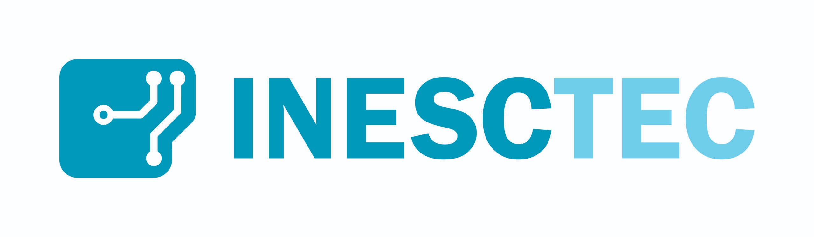
INESC TEC
Research Intern
Collaborating on processing schemas regarding Multimodal Streaming and Network Perception processing pipelines.
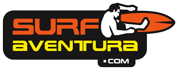
SurfAventura
IT & Operations
Led technical design compliance reviews and continuous execution deployment maps of analytics SaaS components.
Engineering Production Pipeline
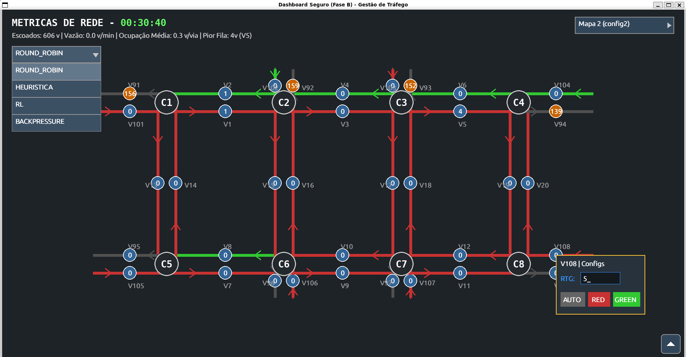
Road Traffic Management System
An adaptive urban traffic management system built on top of SNMP/INMF. Features micro-simulation, real-time control, custom Fernet cryptographic hardening, and live visualization dashboards.
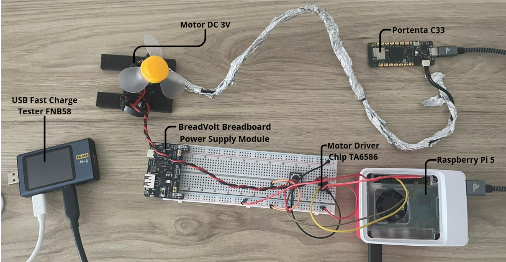
DriftSense-PM
An adaptive predictive maintenance and concept drift detection system optimized for the Edge. Combines Arduino/Raspberry Pi hardware logging, OC-SVM anomaly detection, and empirical latencies/energy profiling.
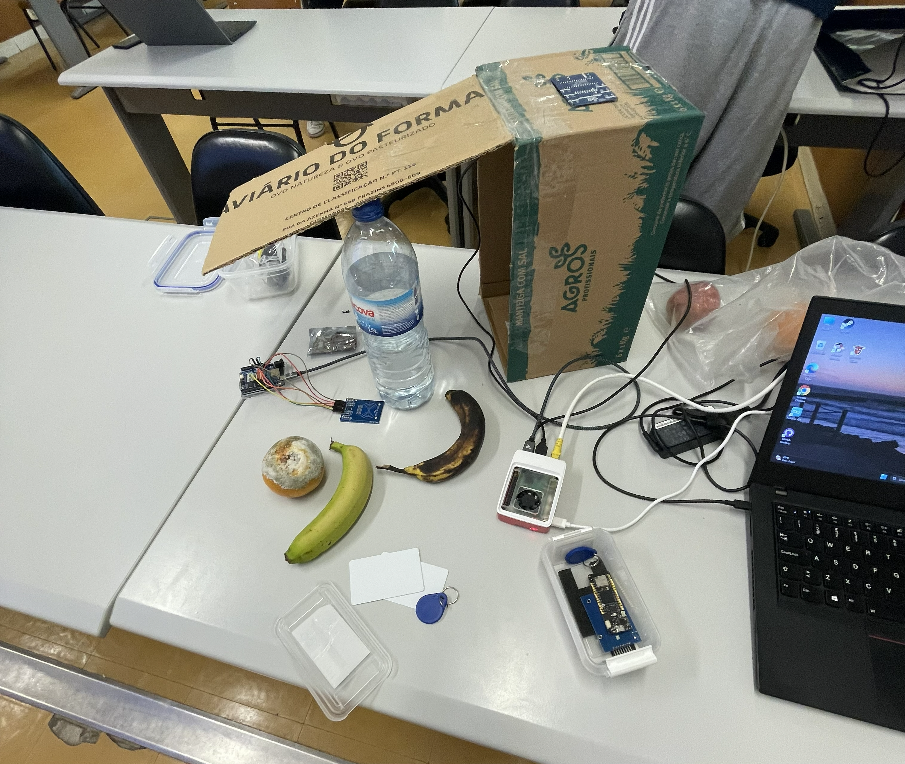
RipeRadar
Smart fruit ripening monitor utilizing NICLA Sense and Arduino Nano. Integrates BLE-to-MQTT python routing, embedded machine learning inference, and empirical power consumption telemetry.
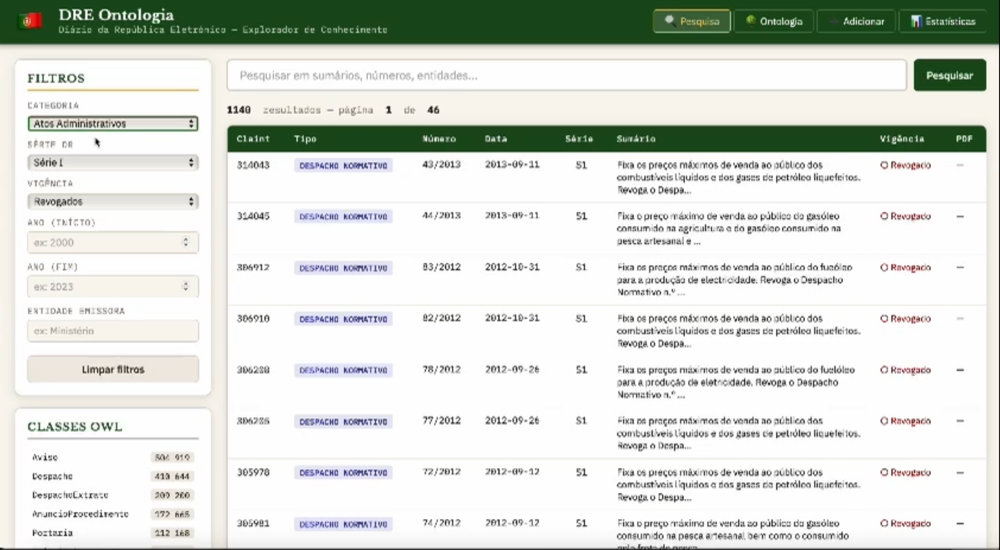
DRE Graph
Knowledge graph platform mapping the Portuguese DRE corpus into OWL/RDF structures. Includes an analytical Flask REST API, SQLite storage indexers, and a single-page management UI.
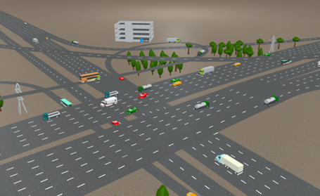
Road Traffic Flow Forecasting in the City of Porto
End-to-end ML solution for predicting urban traffic congestion levels in the city of Porto, following the CRISP-DM methodology. Achieved a competitive performance that aligns with the top 4 elite positions in generalization capability.
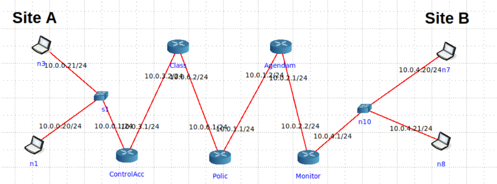
QoS VNFs
Modular QoS architecture using VNFs, including access control, traffic classification, policing, scheduling, and monitoring. All components were deployed across a virtualized network core using IP-based service chaining.
Tuga Compiler
Constructed a custom language parser pipeline delivering robust operator precedence mapping into targeted custom bytecode VMs.
3D Piano Simulator
Interactive Blender simulator handling sophisticated runtime script logic paths for real-time key transformations and sound indexing.
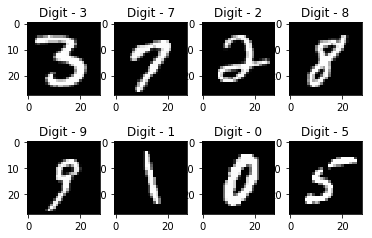
Digit Classifier AI
Feedforward binary neural network analyzing 20x20 matrices using early stopping metrics and early split constraints.
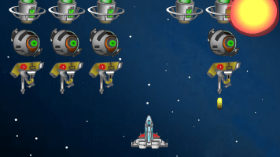
Space Invaders OOP
Engineered enemy path state machines and responsive vector input threading using complex Java structures.
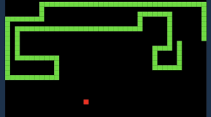
Snake Game FX
Structured sandbox collision detection algorithms rendering shifting, spinning polygonal maps.
Campus Hub Prototyping
Designed clear flow charts mapping complex, user-centric notification arrays and calendar event linkages.